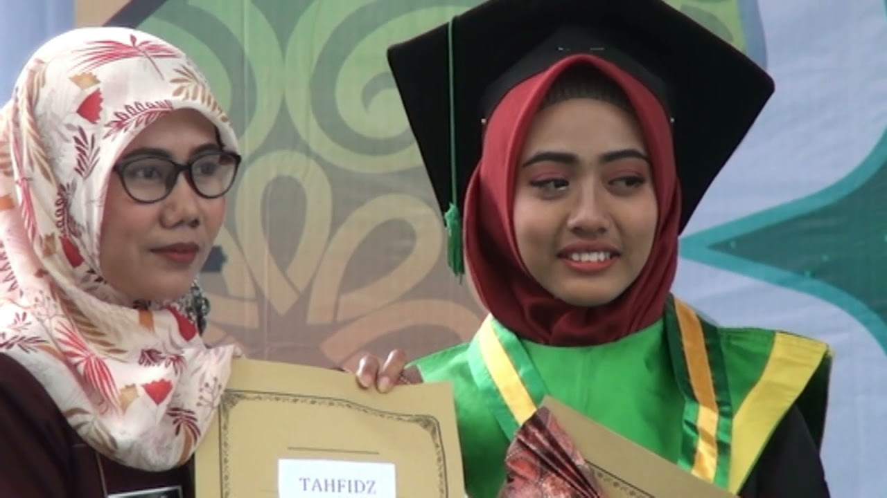

Dari Pesantren Tradisional Menuju Madrasah Aliyah Berkualitas
Perjalanan pendidikan MA Al-Ittihad Tawangsari berakar kuat dari sejarah Pondok Pesantren Al-Ittihad yang didirikan pada tahun 1956 oleh al-maghfur lah KH. Nawawi Ramli di Dusun Tawangsari, Kecamatan Trowulan, Kabupaten Mojokerto. Sejak awal pendiriannya, pesantren ini fokus menjadi pusat pengajaran ilmu-ilmu keislaman klasik dan tahfidz Al-Qur’an di kawasan bersejarah bekas pusat Kerajaan Majapahit.
Seiring dengan tuntutan zaman dan kebutuhan masyarakat sekitar akan pendidikan formal tingkat menengah atas yang berlandaskan nilai-nilai Islam, pada tahun 2000 didirikanlah Madrasah Aliyah (MA) Al-Ittihad oleh KH. Albazi Nawawi di bawah naungan Yayasan Pendidikan Islam dan Sosial (YPIS) Al-Ittihad.
Kini, MA Al-Ittihad telah resmi mengantongi Izin Operasional dari Kementerian Agama Republik Indonesia (SK: MAS/16.0033/2017), tercatat di Kemendikdasmen dengan NPSN 20584241, serta Terakreditasi B oleh Badan Akreditasi Nasional (BAN-PDM).


KH. Albazi Nawawi
Pengasuh PPTQ Al-Ittihad Tawangsari
Tonggak Sejarah Lembaga
Pondok Pesantren Al-Ittihad dirintis oleh KH. Nawawi Ramli sebagai pusat kajian ilmu agama dan tahfidz Al-Qur'an.
Madrasah Aliyah (MA) Al-Ittihad didirikan oleh KH. Albazi Nawawi guna menjawab kebutuhan pendidikan formal tingkat atas.
Penerbitan SK Izin Operasional Kemenag Nomor: MAS/16.0033/2017 tanggal 20 September 2017.
Terakreditasi B, mengembangkan integrasi Kurikulum Merdeka, Tahfidz Al-Qur'an, dan Balai Latihan Vokasi.
Visi Madrasah
"Terwujudnya Generasi Santri yang Qur'ani, Berakhlakul Karimah, Unggul dalam Prestasi Intelektual, serta Mandiri dalam Berkehidupan Bermasyarakat."
Diterjemahkan dalam setiap hembusan nafas pembelajaran, ibadah harian, dan kegiatan santri di lingkungan kampus.
Misi Madrasah
- Menyelenggarakan pendidikan Islam yang memadukan kurikulum Kemenag dengan pembelajaran Al-Qur'an dan kitab kuning.
- Membiasakan pengamalan akhlak mulia dan adab santri dalam pergaulan sehari-hari berlandaskan ajaran Ahlussunnah wal Jama'ah.
- Meningkatkan mutu proses belajar mengajar sains, teknologi, dan bahasa asing (Arab & Inggris) secara aktif.
- Membekali peserta didik dengan keterampilan hidup (life skills), kewirausahaan kreatif, dan kemandirian mental.
Masyayikh & Kehidupan Pesantren Al-Ittihad
Sanad keilmuan yang bersambung dengan para ulama salaf, membina karakter santri dengan keteladanan akhlak dan keikhlasan.

Haul Akbar KH. Nawawi Romli & Masyayikh
Majelis dzikir dan tahlil akbar bersama ribuan jamaah, alumni, dan santri Ponpes Al-Ittihad.

Haflah Khotmil Qur'an & Wisuda Santri
Pengukuhan para santri penghafal Al-Qur'an dan kelulusan santri jenjang madrasah.
Identitas Legalitas Satuan Pendidikan
Data resmi yang terdaftar pada Pusat Data dan Teknologi Informasi (Pusdatin) Kementerian Pendidikan Dasar & Menengah serta Kementerian Agama RI.
| Nama Satuan Pendidikan | MAS AL ITTIHAD (MA AL-ITTIHAD TAWANGSARI) |
| Nomor Pokok Sekolah Nasional (NPSN) | 20584241 |
| Status Akreditasi | B (BAN-PDM / Terakreditasi) |
| Bentuk & Jenjang Pendidikan | Madrasah Aliyah (MA) / Pendidikan Menengah (DIKMEN) |
| Kementerian Pembina | Kementerian Agama Republik Indonesia (Kemenag) |
| SK Izin Operasional | MAS/16.0033/2017 (TMT: 20-09-2017) |
| Naungan Lembaga / Yayasan | Yayasan Pendidikan Islam dan Sosial (YPIS) & Pondok Pesantren Al-Ittihad |
| Alamat Lengkap | Jl. Raden Wijaya No. 105, Dusun Tawangsari, Desa Tawangsari, Kec. Trowulan, Kab. Mojokerto, Prov. Jawa Timur (Kode Pos 61362) |
| Koordinat Geografis | Lintang: -7.5119000, Bujur: 112.3840000 |
| Kontak WhatsApp & Email | 0857-0666-6126 • maalit2000@gmail.com |